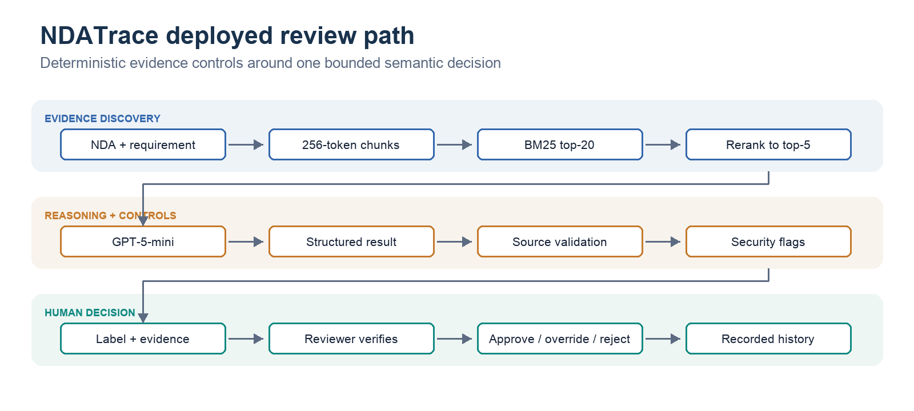
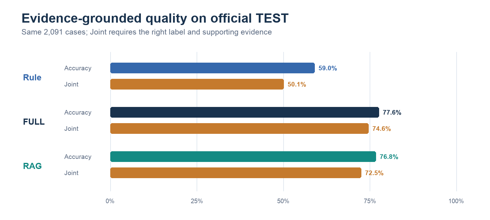
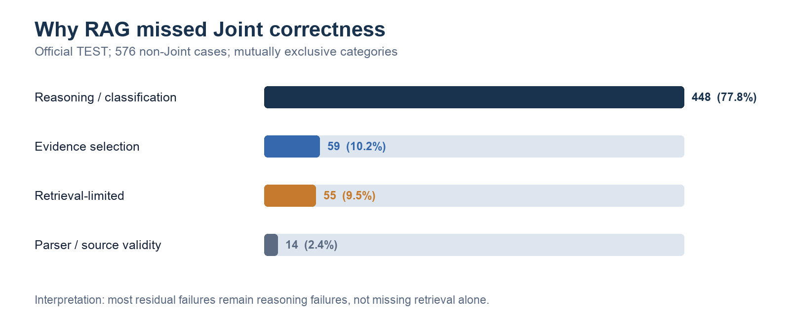
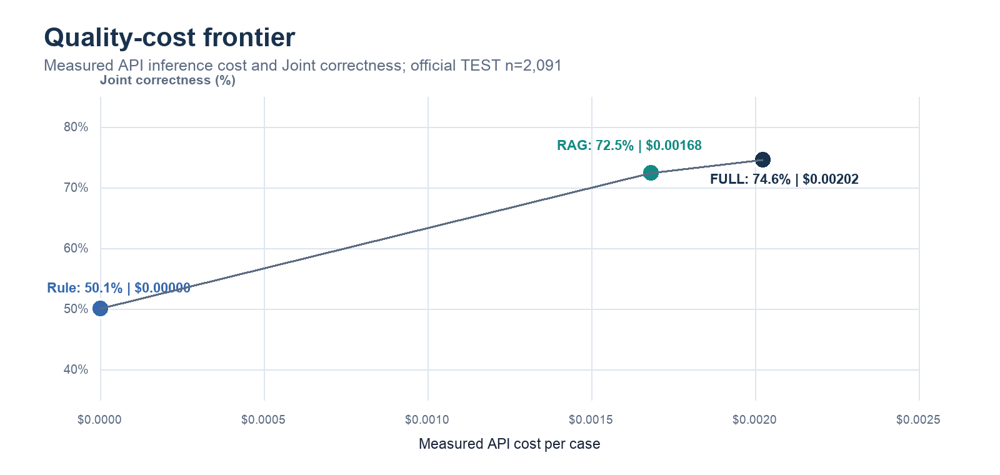
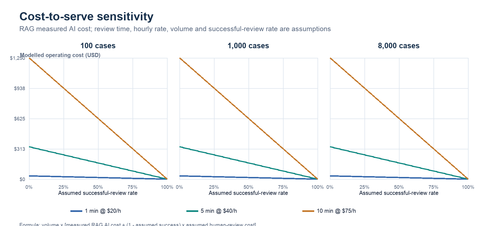

NDATrace: Does Additional AI Complexity Earn Its Place?
Word count: 1,197 words (main prose only; headings, tables, captions, references and audit notes excluded).
1. Problem and business significance
Tina, an enterprise legal-operations analyst, reviews vendor NDAs against 17 confidentiality requirements before lawyer approval. Manual review and keyword search are unreliable when obligations are paraphrased, qualified by exceptions or distributed across clauses. NDATrace classifies each requirement as Entailment, Contradiction or NotMentioned and returns the supporting clause for inspection. Evidence matters because a correct label based on the wrong clause is not a defensible review result. The system assists Tina; it does not approve, reject or negotiate contracts. A vendor survey of 286 legal professionals reported that 52% of organisations handle 101-1,000 contracts annually and most spend 2-4 hours per contract [1]. This motivates the workload, but NDATrace has not measured productivity savings.
2. Proposed solution and architecture
I implemented a hybrid system because semantic interpretation and operational control require different mechanisms. Deterministic software performs clause-aware chunking, retrieval, reranking, schema parsing, evidence-source validation, injection flagging and resource limits. GPT-5-mini performs the bounded semantic classification. The frozen runtime creates 256-token clause-aware chunks, retrieves 20 candidates with BM25, reranks them with a cross-encoder and sends the top five to the model with the minimal prompt. The reviewer receives the label, verbatim evidence and flags, then records the final decision. Renting the model avoided training and serving infrastructure; building the retrieval, evaluation and workflow layers preserved control over project-specific evidence semantics and reviewer authority. This division makes model outputs checkable without implying that a valid quotation guarantees a correct interpretation.

Figure 1. Frozen prototype path: 256-token chunks, BM25 top-20, cross-encoder top-5, GPT-5-mini, deterministic controls and mandatory human review.
| Layer | Build / rent / use | Actual prototype decision |
|---|---|---|
| Compute | Rent | OpenRouter-hosted inference; local Ollama retained for the measured comparator |
| Model | Rent | GPT-5-mini; avoid training and model-serving overhead |
| Data and retrieval | Use + build | Public ContractNLI; build per-document BM25/reranking pipeline using existing libraries/models |
| Orchestration | Build | One bounded classification path; no agent loop or automatic confidence gate |
| Evaluation | Build | Gold-aware offline harness separated from the gold-blind runtime validator |
| Serving | Build | FastAPI, Next.js evidence display, review history and recorded reviewer decisions |
| Governance | Build / incomplete | Guards, limits and human authority exist; enterprise identity and access controls do not |
3. Experimental methodology and progression
I assigned the official ContractNLI splits before comparison: TRAIN for component development, DEV for validation, and TEST for the final frozen evaluation. Gold labels and evidence were withheld from inference and used only for scoring. A prior superseded lineage had partially observed TEST, so I describe the final split as not tuned against in this re-derived sequence rather than perfectly blind. The final official population contains 2,091 requirement-document cases; the separate 49-case curated DEV battery concentrates known difficult mechanisms and is not a second benchmark. Each experiment changed one decision layer or supplied a diagnostic: Oracle evidence separated retrieval from reasoning, controlled prompts and retrieval sweeps froze simple components, and later comparisons tested whether RAG, an agent or automatic routing earned added complexity. The decisive FULL/RAG comparison held model, prompt, evaluator and case population constant and used paired significance tests. Results from earlier local-model or smaller diagnostic runs inform decisions only under their recorded conditions.
| Experiment / research question | Key measured finding | Architectural decision or lesson |
|---|---|---|
| Oracle: what remains difficult with gold evidence? | On 300 balanced TRAIN cases, GPT-5-mini reached 0.906 macro-F1 and 82% Contradiction recall; local Qwen reached 0.638 and 30% | Use the hosted model for final semantic quality; evidence access is not the only bottleneck |
| Model selection: local or hosted? | Hosted GPT-5-mini had the strongest reasoning ceiling; local Qwen remained a zero-API-cost comparator | Rent the stronger model; disclose provider dependency and measured cost |
| Prompt engineering: does more instruction help? | On 150 retrieved-context TRAIN cases, the minimal prompt led on macro-F1 (0.507 vs 0.448/0.403) and Contradiction recall (22% vs 6%/2%) | Freeze the minimal prompt |
| Retrieval optimisation: which evidence path? | On 4,371 TRAIN cases, BM25, dense and hybrid candidate generation converged near 92.2% Recall@5 after reranking; BM25 and dense differed on one case | Freeze simpler BM25 top-20 plus cross-encoder top-5 |
| FULL versus RAG: does bounded context preserve quality? | On matched TEST, RAG cut input tokens 50.4% and API cost 16.8%, but FULL led Joint correctness by 2.2 points | Keep FULL as quality reference; serve RAG as an explicit efficiency trade-off |
| Selective agent: do tools recover failures? | Fifteen escalations produced zero tool calls and 0.0-point net Joint gain, with $0.0218 added spend | Reject the tested agent from runtime |
| Confidence routing: can errors be isolated cheaply? | The strongest policy reviewed 51.4% of 138 DEV cases yet left 10.4% residual Joint error, missing both provisional targets | Keep every case subject to human review |
| Robustness and security: do controls withstand attacks? | Four of 11 injection-pattern pairs succeeded; later guards caught known attacks but only 4/11 patterns, while resource-limit tests passed | Quarantine detected patterns, retain human review and disclose residual injection risk |
4. Quality evaluation and architecture trade-offs
Classification accuracy asks only whether the label is right. Joint correctness additionally requires sufficient gold-evidence overlap, so it exposes answers that sound right but cannot be substantiated. On official TEST, FULL achieved 77.6% accuracy and 74.6% Joint correctness; RAG achieved 76.8% and 72.5%. Their accuracy difference was not significant (paired McNemar p=0.217), while FULL's Joint advantage was significant (p=0.0047). The wider label-to-Joint drop for RAG shows why accuracy alone obscures evidence coverage and selection weaknesses. FULL therefore remains the strongest evidence-grounded quality reference, although neither architecture reaches a level that supports unsupervised legal decisions.
The proposal originally targeted a five-point RAG gain in risk-sensitive recall over FULL. Using the predeclared equal average of Contradiction and NotMentioned recall, RAG improved from 69.1% to 70.3%: +1.2 points, so the original target was not met. A later comparison against the rule baseline yields +16.6 points and clears the threshold, but that reframing does not change the original result. Reporting both class recalls also prevents the average from hiding weak conflict detection. RAG still merits investigation because it halves input context, lowers measured inference cost and occasionally avoids distracting clauses; these are efficiency and selectivity benefits, not proof of superior overall quality. The curated results point in the same direction on Joint correctness but are too small and deliberately difficult for a significance claim.
| Metric | Rule | FULL | RAG |
|---|---|---|---|
| Official TEST benchmark - 2,091 cases | |||
| Accuracy | 59.0% | 77.6% | 76.8% |
| Macro-F1 | 0.479 | 0.727 | 0.723 |
| Joint correctness | 50.1% | 74.6% | 72.5% |
| Contradiction recall | 16.8% | 75.5% | 77.3% |
| NotMentioned recall | 90.5% | 62.7% | 63.2% |
| Risk-sensitive recall (C/NM mean) | 53.6% | 69.1% | 70.3% |
| Curated development evaluation - 49 cases | |||
| Accuracy | 51.0% | 73.5% | 71.4% |
| Macro-F1 | 0.457 | 0.720 | 0.708 |
| Joint correctness | 44.9% | 73.5% | 67.3% |
| Contradiction recall | 13.3% | 46.7% | 53.3% |
| Golden / ordinary (n=30): accuracy / Joint | 60.0% / 56.7% | 80.0% / 80.0% | 76.7% / 73.3% |
| Difficult / negative (n=15): accuracy / Joint | 46.7% / 33.3% | 53.3% / 53.3% | 53.3% / 46.7% |

Figure 2. Official TEST comparison. Accuracy alone obscures evidence-selection failures; the curated DEV scores are deliberately excluded from this population-level chart.
5. Failure analysis and robustness
Aggregate performance does not explain mechanism. On official TEST, 448 of RAG's 576 non-Joint cases were reasoning or classification failures despite retrievable gold evidence; 59 were evidence-selection failures, 55 retrieval-limited and 14 parser/source-validity failures. The curated diagnosis complements those population counts without estimating frequencies. In cases 007 and 043, RAG omitted some gold spans from retrieval and failed to cite some that were present. Cases 034, 039 and 040 show that both architectures still misread documented exception clauses. In case 038, FULL over-weighted a permissive distractor that RAG did not retrieve. Case 001 raises a substantive annotation concern. More context or retrieval depth alone is therefore not a general remedy.
| Verified mechanism | Case-level observation | Engineering implication |
|---|---|---|
| Partial retrieval plus incomplete evidence selection | Cases 007 and 043: some gold spans absent from top-five context and some retrieved spans left uncited | Measure retrieval coverage and multi-span citation separately |
| Exception / carve-out interpretation | Cases 034, 039 and 040 failed under both FULL and RAG | Build an independent exception-reasoning evaluation before changing prompts |
| Distractor-clause interference | Case 038: FULL followed a permissive clause; narrower RAG context supported the correct contradiction | Selective context can help in individual cases, not establish population superiority |
| Annotation ambiguity | Case 001's annotated evidence is substantively debatable | Audit benchmark ground truth alongside model errors |

Figure 3. Canonical official TEST taxonomy; denominator is exactly 576 non-Joint RAG cases. Targeted case mechanisms are not mixed into these counts.
In the small robustness study, Joint correctness fell from 85% on clean inputs to 75% under attack. Source-validity checks did not stop injected text from becoming valid quoted evidence. Length caps, spend ceilings, rate/concurrency limits and a pattern guard now constrain resource use and quarantine detected instructions, but detection covered only 4 of 11 known injection patterns. Detection, model resistance and mandatory human review are distinct safeguards; none makes document content trustworthy.
6. Cost-to-serve and business trade-offs
RAG reduced mean input tokens from 2,279 to 1,131, but mean output tokens changed only from approximately 727 to 701. Total measured API cost consequently fell by 16.8%, from $0.00202 to $0.00168 per case, while latency changed little. Lower input context is useful, but output generation and reasoning remain material. Because FULL retains higher Joint correctness, selecting the cheaper inference path could increase potential review work; model price alone cannot establish lower operating cost.
| Measure | FULL | RAG |
|---|---|---|
| Mean input tokens per case | 2,279 | 1,131 |
| Mean output tokens per case | 727 | 701 |
| Measured API inference cost per case | $0.00202 | $0.00168 |
| Mean latency | 7.31 s | 7.14 s |
| Official TEST Joint correctness | 74.6% | 72.5% |

Figure 4. Measured API inference economics on the same 2,091 TEST cases. Rule, RAG and FULL are comparable; local compute cost is not monetised.

Figure 5. Hypothetical RAG operating scenarios across review time/rate, volume and assumed successful-review rate. AI cost is measured; every other operating input is an explicit assumption.
The sensitivity model shows how review time, hourly cost, volume and the assumed share of cases avoiding fallback can dominate sub-cent inference. Joint correctness is shown only as a possible quality proxy, not a validated automation rate. The deployed prototype requires human verification for every case, so its current operating model adds measured inference cost to the existing review process rather than automatically avoiding review. If workload does not fall, potential labour savings disappear; if it falls only slightly, quality-related rework can outweigh the small RAG price advantage. No workplace study, realised saving or ROI is claimed.
7. Governance, limitations and prioritised improvements
NDATrace remains a reviewer-assistance prototype because its largest failure class is incorrect interpretation, not merely missing retrieval. It also has incomplete multi-span evidence, benchmark ambiguity, partial injection detection and no validation on confidential enterprise NDAs. The tested agent added cost without useful tool behaviour, and confidence routing could not meet its joint workload/error criteria, so neither controls reviewer access. Every result remains subject to human verification. I would prioritise exception and polarity reasoning first because it addresses the dominant reasoning failure family, then evaluate multi-span citation, and only then revisit retrieval depth. Security expansion and enterprise access controls are deployment prerequisites rather than accuracy enhancements. Improvements below are proposals tied to observed mechanisms; none has demonstrated benefit yet. ContractNLI is public, uses fixed requirements and ordinary-length NDAs, so its scores cannot establish performance on an organisation's templates, risk tolerance, jurisdictions or long confidential agreements.
| Observed risk | Implemented safeguard | Next proposed improvement |
|---|---|---|
| Scattered or missing evidence | BM25 top-20, reranking and visible sources | Test coverage on longer documents and cross-references |
| Incomplete evidence selection | Joint metric, verbatim validation and human verification | Evaluate multi-span citation recall independently |
| Contractual exceptions | Mandatory human review | Build a larger independent exception/polarity set |
| Prompt injection | Pattern guard, quarantine flag and resource limits | Broaden novel attack coverage; separate detection from resistance testing |
| Incorrect automatic escalation | No confidence gate; every case remains reviewable | Validate stronger signals before selective automation |
| Sensitive enterprise documents | Prototype restricted to public data | Add authentication, access control, confidentiality and provider assessment |
8. Conclusion
Additional AI complexity did not consistently deliver additional value. Hosted semantic classification substantially improved on keyword rules. Retrieval halved input context and reduced measured inference cost, but FULL retained stronger overall Joint correctness. The tested selective agent added no net evidence-grounded benefit, and confidence routing did not justify selective autonomous processing. The evidence therefore supports bounded reviewer assistance, not autonomous review. NDATrace remains a prototype with explicit human authority and known interpretation, evidence and security limitations; human verification is necessary.
References
[1] LegalOn Technologies and In-House Connect. "2025 State of Contracting Survey," 15 January 2025. Vendor research; LegalOn sells contract-review software. https://www.legalontech.com/press-releases/2025-survey.
[2] Yuta Koreeda and Christopher D. Manning. "ContractNLI: A Dataset for Document-level Natural Language Inference for Contracts." Findings of EMNLP 2021, pp. 1907-1919. https://aclanthology.org/2021.findings-emnlp.164/.
Report evidence map
| Report item | Canonical source | Population / status |
|---|---|---|
| Architecture and Figure 1 | pipeline/frozen_rag.py; pipeline/final_review.py; docs/architecture.md |
Current interactive runtime, source-verified |
| Table 1 - experimental progression | Oracle, prompt, retrieval, agent, routing and security experiment summaries; docs/experiment_registry.md |
Mixed diagnostic populations, identified in each row |
| Table 2 and Figure 2 - quality | experiments/E20_final_rag_test/results/E20_final_report.json; results/final/v2/full_test_comparison.csv; experiments/E24_targeted_evaluation/results/e24_analysis.json |
Official TEST n=2,091 kept separate from curated DEV n=49 |
| Table 3 and Figure 3 - failures | experiments/E20_final_rag_test/results/E20_final_report.json; experiments/E24_targeted_evaluation/summary.md |
TEST taxonomy n=576 failures; small case-level DEV diagnosis |
| Table 4 and Figure 4 - economics | Official TEST artifacts above; FULL output tokens recomputed from the two saved hosted prediction files | Matched TEST n=2,091; measured inference only |
| Figure 5 - cost sensitivity | experiments/E18_business_course_synthesis/summary.md; results/business_economics_scenario.json |
Scenario model; human-review inputs and automation success are assumptions |
| Table 5 - governance | docs/failure_analysis.md; routing, robustness and security summaries; docs/production_backlog.md |
Safeguards measured where stated; improvements are proposals |
Quality-control summary
The final HTML is generated from this editable source. Offline verification recomputes official and targeted metrics from saved predictions, checks population labels, validates the five figure files, checks that internal experiment identifiers do not appear in the main narrative, and confirms the declared word count. The targeted notebook contains eight executed code cells and saved outputs. No paid inference or frozen-result modification was performed for this report.
Remaining methodological and submission limitations
- The official TEST split was not tuned against in the final re-derived sequence, but a superseded earlier lineage had partially observed it; the report does not call it perfectly blind.
- The curated 49-case DEV battery was designed to be difficult and cannot establish statistical significance or population failure rates.
- The economic model is hypothetical because review-time reduction, enterprise operating cost and safe automation rate were not measured.
- Long confidential enterprise contracts, authentication, distributed controls and novel adversarial attacks remain unvalidated.
- The HTML links to local figure files in
reports/figures/; keep that folder beside the report when moving it.